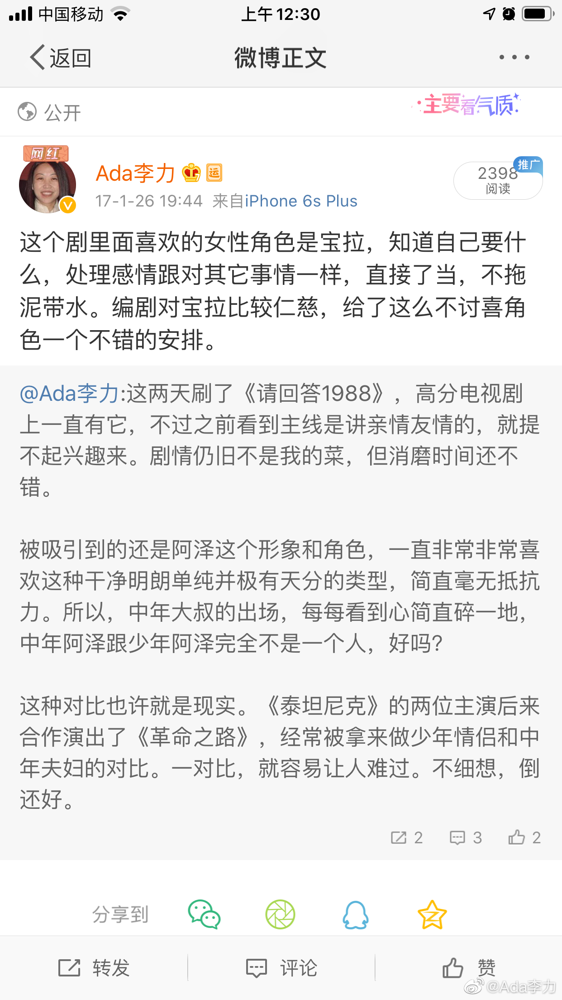

#不明所以#
不断在信息流里看到《请回答1988》的讨论帖，有很多人说要二刷，三刷，乃至说不知道看什么时就重看这部。有个讨论热点是德善应该跟谁在一起，阿泽还是正焕？
我记得自己也看过这个韩剧，但好像看的是另外一个剧，跟这些大热议题，几乎没有共鸣。
没觉得正焕有可能跟德善在一起，我也搞不懂为什么有那么多人为正焕惋惜，我看到的是，正焕是那种相当让人讨厌的一类男生，在女生面前似乎只有毒舌才能表达自己的在意和好感，这属于脑子坏掉了好吗？这种相处和说话方式，如果一起生活，有的是让你难受的地方。
我只能猜想，很多人看电视剧会代入自己。比如我看这个剧，更容易把自己代入宝拉。虽然从实际来看，我应该更容易代入德善，我上面有被父母赋予大权的姐姐，下面有受宠的弟弟，做为家中老二，也一样被父母忽视。但我一直很臭屁不随和，这点不像德善。
为正焕叫冤的人，是不是也因为代入？感觉自己做了很多，只是没表达出来，就错过了爱情，因此倍感委屈。
其实心意，并不是你以为的心意，别人感受到的心意，才是真正的心意。如果不懂，我举个例子：
你说了个笑话，结果对方没笑，反倒生气了，这是谁的问题呢？我见过不少这类人，觉得这是听笑话人的问题，还会指责对方：你怎么没幽默感，或者你怎么这么小心眼？有这种反应的说笑话人，都是大SB。
所以正焕没机会是对的，不然就没天理了。
不断在信息流里看到《请回答1988》的讨论帖，有很多人说要二刷，三刷，乃至说不知道看什么时就重看这部。有个讨论热点是德善应该跟谁在一起，阿泽还是正焕？
我记得自己也看过这个韩剧，但好像看的是另外一个剧，跟这些大热议题，几乎没有共鸣。
没觉得正焕有可能跟德善在一起，我也搞不懂为什么有那么多人为正焕惋惜，我看到的是，正焕是那种相当让人讨厌的一类男生，在女生面前似乎只有毒舌才能表达自己的在意和好感，这属于脑子坏掉了好吗？这种相处和说话方式，如果一起生活，有的是让你难受的地方。
我只能猜想，很多人看电视剧会代入自己。比如我看这个剧，更容易把自己代入宝拉。虽然从实际来看，我应该更容易代入德善，我上面有被父母赋予大权的姐姐，下面有受宠的弟弟，做为家中老二，也一样被父母忽视。但我一直很臭屁不随和，这点不像德善。
为正焕叫冤的人，是不是也因为代入？感觉自己做了很多，只是没表达出来，就错过了爱情，因此倍感委屈。
其实心意，并不是你以为的心意，别人感受到的心意，才是真正的心意。如果不懂，我举个例子：
你说了个笑话，结果对方没笑，反倒生气了，这是谁的问题呢？我见过不少这类人，觉得这是听笑话人的问题，还会指责对方：你怎么没幽默感，或者你怎么这么小心眼？有这种反应的说笑话人，都是大SB。
所以正焕没机会是对的，不然就没天理了。
- 